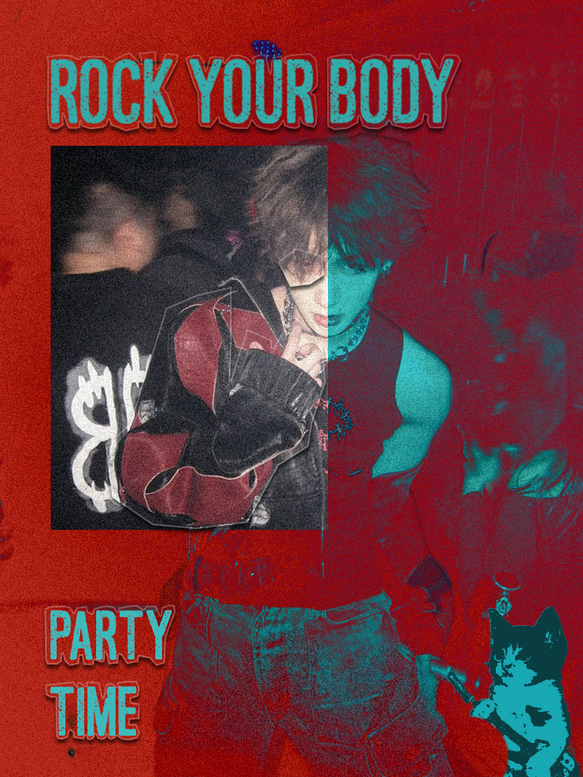
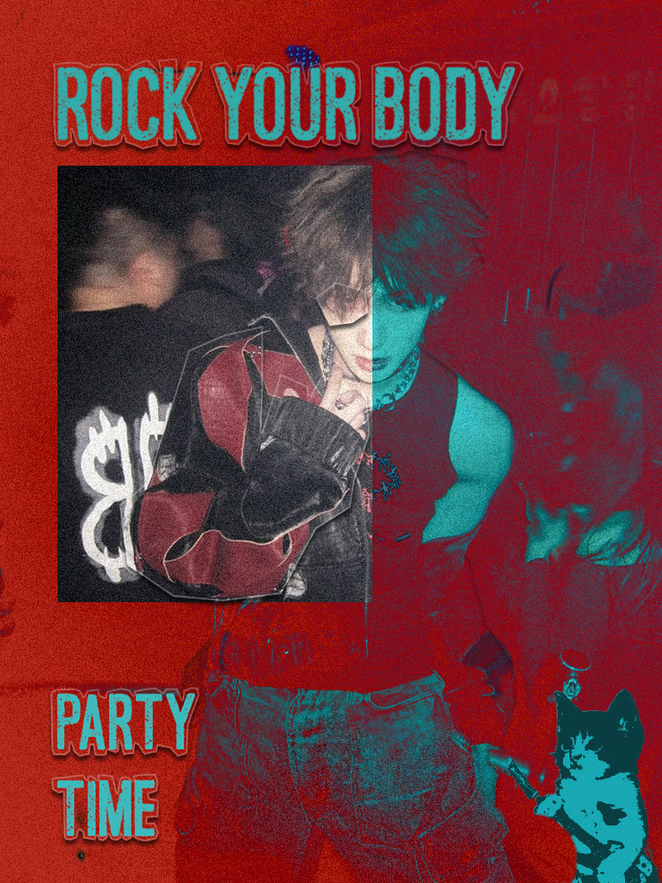

Graafiline disain
Graafiline disain on midagi, mida ma teen lihtsalt sellepärast, et mulle meeldib visuaalselt mõelda ja katsetada. Ma naudin seda, kui saan proovida erinevaid värve, fonte ja kujundeid ning panna need kokku nii, et tulemus looks mingi tunde või stiili. Vahel teen lihtsaid plakateid või väikseid kujundusi, vahel lihtsalt katsetan, mis kokku sobib ja mis mitte.
Algul alustasin graafilise disainiga kuulsuste editimise ja fan-arti tegemisega, kui noorem olin. See oli lõbus viis katsetada Photoshopi ja sarnaste programmidega ning samal ajal oma lemmiktegelasi või staaride pilte stiilselt kujundada. Mulle meeldib, et graafilises disainis on nii palju erinevaid stiile ja võimalusi, näiteks saab teha minimalismi, värvikaid illustratsioone, fotomanipulatsioone või midagi täiesti hullumeelset.
Digitaalselt disainimine on mugav, sest ma saan kiiresti ideid muuta või täiustada ilma, et peaksin otsast alustama. Mõnikord kulutan lihtsalt aega erinevate lemmikvärvide ja paigutustega mängimisele, kuni tunnen, et kujundus hakkab ilmet võtma. See on rahulik tegevus, aga samas ka piisavalt väljakutsuv, et igav ei hakka.
Graafiline disain on minu jaoks hea viis loominguliselt mõelda ja oma maitset arendada. See on hobi, mida teen oma tempos.
Põhjus, miks ma tahtsin õppida UI/UX disaini, tuli minu algsest huvist graafilise disaini vastu. Kui ma sellega tegelesin, avastasin, et mulle meeldib luua visuaalselt meeldivaid ja tasakaalustatud kujundusi. Samal ajal sain teada, et mu sugulane töötab UI/UX disainerina, ja see tekitas minus huvi, kuidas graafiline disain ühendada praktilise kasutajakogemuse ja funktsionaalsusega. See oli hetk, kus ma nägin, et saan oma loomingulise huvi viia edasi millegi professionaalse ja praktilise suunas, ning sellest hetkest hakkas UI/UX disain mind eriti köitma.

 
